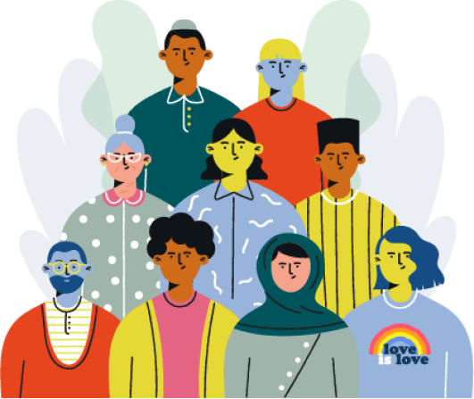

Cultivar a
DIVERSIDADE
nos fortalece!
A gente sabe que cada um tem características únicas. A soma de todas
elas nos faz plurais. A Suzano tem a diversidade e a inclusão como
premissas para ser uma empresa melhor a cada dia e busca a evolução no
tema constantemente.
